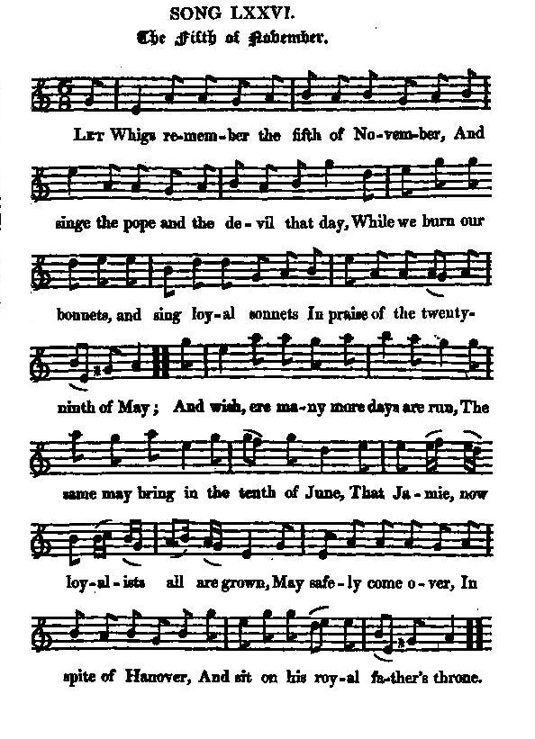

The Fifth of November
Le Cinq Novembre
Author unknown
Tune - Mélodie"Remember, remember the Fifth of November!"
from Hogg's "Jacobite Relics" Part I, N°76
Sequenced by Christian Souchon

|
To the tune: One of the songs in the "Beggar's Opera" was made to this old air. James Hogg in "Jacobite Relics", 1819 A nursery song, which is apparently sung to the same tune, begins with the analogous words of "Remember, Remember the fifth of November" instead of "The Whigs remember the fifth of November" and refers to Guy Fawkes. It has its origin in an event of 17th century English history, the Gunpowder Plot. "On the 5th November 1605 Guy Fawkes was caught in the cellars of the Houses of Parliament with several dozen barrels of gunpowder... The following year in 1606 it became an annual custom for the King and Parliament to commission a sermon to commemorate the event... This practice, together with the nursery rhyme, ensured that this crime would never be forgotten! Hence the words " Remember , remember the 5th of November". The nursery rhymes begins thus: Remember remember the fifth of November Gunpowder, treason and plot. I see no reason Why gunpowder, treason Should ever be forgot... In England the 5th of November is still commemorated each year with fireworks and bonfires culminating with the burning of effigies of Guy Fawkes (the guy). The 'guys' are made by children by filling old clothes with crumpled newspapers to look like a man. Tradition allows British children to display their 'guys' to passers-by and asking for " A penny for the guy". source:http://www.rhymes.org.uk/remember_remember_the_5th_november.html According to the "Online Etymology Dictionary": Guy: "fellow," 1847, originally American-English; earlier (1836) "grotesquely or poorly dressed person," originally (1806) "effigy of Guy Fawkes," leader of the Gunpowder Plot to blow up British king and Parliament (Nov. 5, 1605), paraded through the streets by children on the anniversary of the conspiracy. The male proper name is from French, (of Germanic. origin). "Saint Garnet": If Fawkes is the individual most associated with, he was only one of the 13 conspirators involved in it. A Jesuit, Henry Garnett (1555 - 1606) was declared guilty of misprision of treason and hanged on 3rd May 1606. Immediately after his death, the story of the miracle of Saint Garnet's straw" began to circulate, according to which a blood stained leaf of corn developped Garnet's likeness. The relic came into the possession of the Jesuits in Liege. "Saint Faux": In the satirical poem "Times' Whistle" (1614-1616), line 269 and ff, we find the assertion that the man who attempts the murder of a prince is canonized by the Papists, as were Ravaillac for the murder of the French king Henry IV in 1610 and "Guy Faux (Fawkes) for his attempt on our King and Parliament" in 1605. (See "Remarks to Mr Paul's speech" in Mr. Paul) |
A propos de la mélodie L'une des chansons de l'"Opéra des Gueux" utilise le même air. James Hogg in "Jacobite Relics", 1819 Une chanson de nourrice, sur le même air, semble-t-il, commence de façon analogue ("Remember, remember!", "souvenez-vous!") au présent chant ("The Whigs remember", "les Whigs se souviennent"). Elle a trait à Guy Fawkes et tient son origine d'un événement historique, la Conspiration des poudres. "Le 5 novembre 1605, Guy Fawkes fut pris dans les caves du Parlement en train de disposer des douzaines de barils de poudre... L'année suivante, en 1606, le Roi et le Parlement inaugurèrent la coutume de faire dire un sermon pour commémorer l'événement...Cette pratique, ainsi que la chanson d'enfant, devait faire en sorte que cet attentat ne tombât jamais dans l'oubli! D'où les mots "Souvenez-vous du 5 novembre!". La comptine commence ainsi: Souvenez-vous, du cinq novembre: Poudres, complot et trahison! Je ne vois aucune raison Pour que poudres et trahison Disparaissent de nos mémoires... En Angleterre, le 5 novembre est encore salué chaque année par des brasiers et des feux d'artifice qui se concluent par l'embrasement de l'effigie de Guy Fawkes (le "guy"). Les "guys" sont confectionnés par les enfants à l'aide de vieux vêtements bourrés de papier journal. Il est d'usage qu'ils les présentent aux passants en réclamant l'obole d'"un sou pour le guy". source:http://www.rhymes.org.uk/remember_remember_the_5th_november.html Selon le "Online Etymology Dictionary": Guy: "type", 1847, utilisé au début dans ce sens en Amérique. Plus anciennement (1836), "personne à l'accoutrement fruste ou ridicule". A l'origine, "effigie de Guy Fawkes", le chef de la Conspiration des poudres visant le roi et le parlement anglais (5 novembre 1605), promenée dans les rues par les enfants le jour anniversaire de l'événement. Ce prénom masculin vient du français où il est lui-même d'origine germanique. "Saint Garnet": Si Fawkes est le nom qu'on associe le plus souvent à la Conspiration des poudres, ils étaient treize à être impliqués. Un Jésuite, Henri Garnet (1555 - 1606) fut déclaré coupable de non-dénonciation de complot et pendu le 3 mai 1606. Aussitôt après sa mort se répandit la rumeur du miracle de la paille de Saint Garnet": on vit apparaître sur une feuille de maïs teintée de sang les traits de Garnet. La relique devint la possession des Jésuites de Liège. "Saint Faux": Dans le poème satirique "La flute des temps" (1614-1616), ligne 269 et ss, on trouve l'affirmation que celui qui attente à la vie d'un prince a de bonnes chances d'être canonisé par Rome: il en va ainsi de Ravaillac, l'assassin d'Henri IV en 1610 et de "Guy Faux (Fawkes) qui tenta de faire sauter le roi et le parlement" en 1605. (Cf. "Remarques sur le discours de M. Paul" dans M. Paul) |

|
THE FIFTH OF NOVEMBER 1. Let Whigs remember the fifth of November [1] And singe the pope and the devil that day, While we burn our bonnets, and sing loyal sonnets In praise of the twenty-ninth of May; [2] And wish, ere many more days are run, The same may bring in the tenth of June, [3] That Jamie, now loyalists all are grown, [4] May safely come over, In spite of Hanover, And sit on his royal father's throne. 2. 'Tis absolute folly to talk of our holy Religion, till once we give Caesar his due; To injure true princes, and gloss o'er offences, Is serving God worse than a Turk or a Jew. Then what we so foully have taken away, O, let us return on our reckoning day, Or else we as wicked as demons are grown; And though to the skies We turn up our eyes, Dishonour the church and the land we own. Source: "The Jacobite Relics of Scotland, being the Songs, Airs and Legends of the Adherents to the House of Stuart" collected by James Hogg, published in Edinburgh by William Blackwood in 1819. |
LE CINQ NOVEMBRE 1. Le cinq novembre les Whigs font entendre, Brûlant pape et diable, force imprécations. [1] Les bonnets qu'on brûle, les sonnets qu'on hurle: C'est au vingt-neuf mai, que nous les réservons. [2] Ensuite, le mois de mai s'achève; Le dix juin qui vient a pris la relève: [3] Nous souhaitons à Jacques, en sujets loyaux [4] Qu'un jour il aborde Et terrasse Hanovre Et vienne recouvrer ses droits ancestraux. 2. Comment prétendre à la piété sans rendre A César son dû? L'étrange religion Qui veut qu'on se taise, quand son Prince on lèse! Juif et Turc pourraient nous donner des leçons! Ce qu'injustement jadis nous prîmes, Le temps est venu d'en payer la dîme, Rendons-le, sinon nous serions des démons; C'est en vain qu'aux cieux Veut élever les yeux Qui déshonore son Eglise et sa Nation! (Trad. Christian Souchon(c)2010) |
|
"This song is improperly named from the first line. It should have been called The Twenty-ninth Of May, as it is manifestly a festival song in honour of the Restoration. It likewise mentions the birth-day of the Chevalier, and the horrid iniquity of keeping from him his rights." James Hogg in "Jacobite Relics", 1819 [1] The fifth of November (1605): refers to the commemoration of the Gunpowder Plot with sermons and burning of effigies (see comment to the tune, above). [2] The twenty ninth of May (1660): the restoration of King Charles II. [3] The tenth of June (1688): Birthday of the Chevalier de Saint Georges, James Francis Stuart. [4] Jamie: James Francis Stuart. |
"C'est à tort que ce chant tire son titre de sa première ligne. On devrait plutôt l'appeler "le Vingt-neuf mai", car c'est, à l'évidence, un chant en l'honneur de la restauration qui parle aussi, de l'anniversaire du Chevalier de Saint-Georges, et de l'injustice qu'on lui fait subir en le privant de ses droits." James Hogg in "Jacobite Relics", 1819 [1] Le cinq novembre (1605): il s'agit de la commémoration de la Conspiration des poudres par des sermons et l'embrasement d'effigies (voir le commentaire de la mélodie, ci-dessus). [2] Le vingt-neuf mai (1660): la restauration de la monarchie avec le retour de Charles II. [3] Le dix juin (1688): Anniversaire du Chevalier de Saint Georges, Jacques François Stuart. [4] Jacques: Jacques François Stuart. |
A Whig song in honour of King George I
The King's Joy|
A NEW SONG 1. Since Hanover is come In spite of France and of Rome, And the Tories have met with their matches, Full loyalty they sing To the coming of their king, And keep up their Courage with catches: But let them have their song, It cant be very long Ere the name will be lost in the nation; For theyve nothing but a tune To support the tenth of June, And the hopes of a restoration. 2. Its a comforting noise To hear the roaring boys, In a tune theyve so oft been desiring; Their music must portend Their own latter end, And like swans, they are Sweetly expiring. The next melodious strain Will be with Paul L n, And there let them chant it out fairly; For, as sure as a gun, The stave will be begun With that old psalm raiser H .ly. |
CHANT NOUVEAU 1. Depuis qu'Hanovre règne en ce pays Malgré le Pape et la France, Ayant trouvé leur maître, les Tories Remplis de loyauté chantent Le retour du roi Des sanglots dans la voix Pour ne pas perdre leur courage. Ils peuvent chanter, On aura vite oublié Jusqu'au nom de ce monarque. Car ils n'ont plus rien Pour célébrer le dix juin Qu'un air et leurs espérances. 2. C'est un vacarme bien réconfortant Que font ces gens quand ils braillent. Car les voeux qu'ils expriment si souvent Annoncent leurs funérailles. Les cygnes dit-on Quand ils expirent font Entendre leurs plus douces plaintes. Eux, leur prochain chant Sera pour Paul L...n Qu'ils le chantent sans contrainte! J'en suis assuré, H...ly voudra commencer A nous servir sa complainte. |